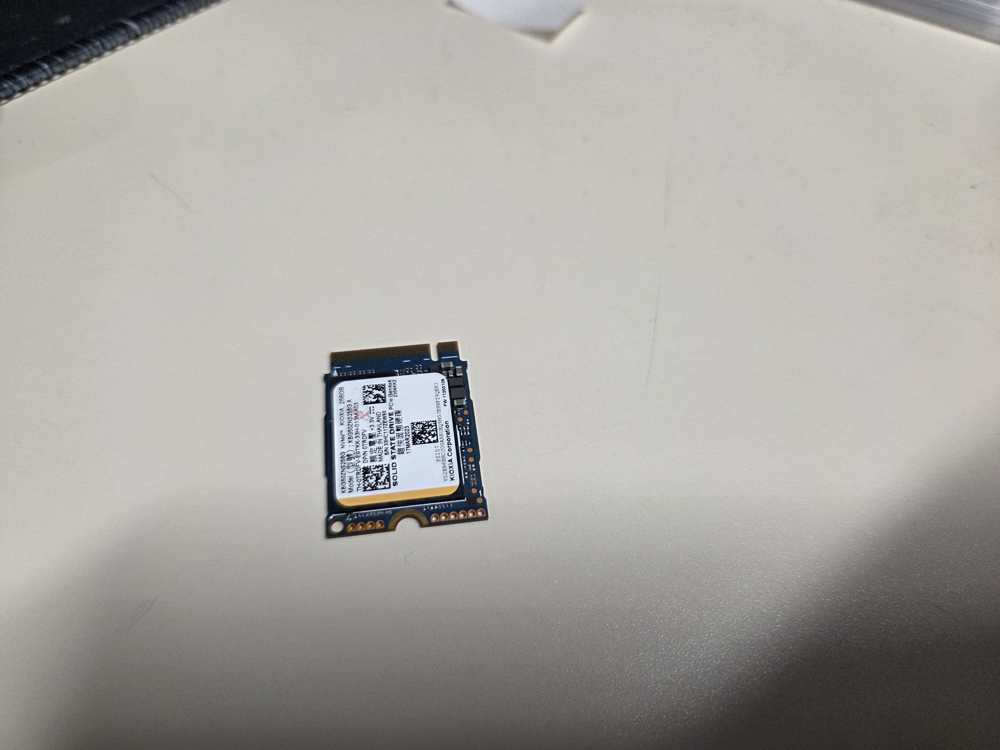
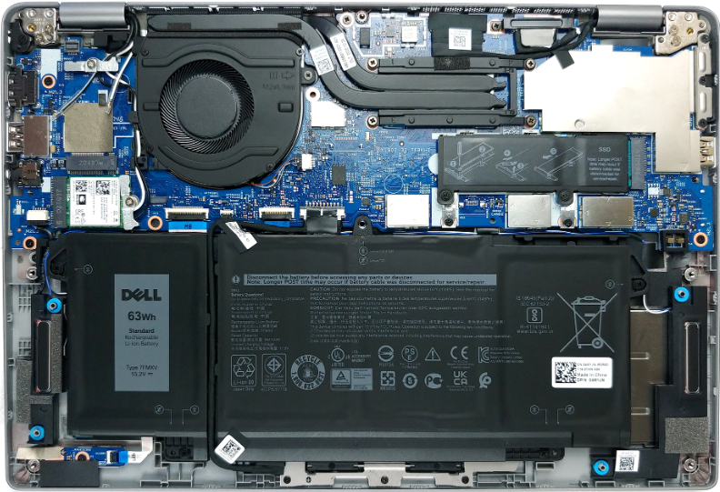

It's Thursday my dudes. That means we are still making the continued trek toward Friday, which is arguably the greatest day in the week. Do you know why Friday is better than Saturday? It's because Friday represents endless possibilities, freedom, and hope. Saturday is when you have to face the reality that you're just not that interesting of a person. The same hobbies and actions that you did throughout the week after work are the same things you are doing on a Saturday.
This afternoon the CIO of our company is retiring. He was the top level of IT that can be attained and he has always been a decent guy as far as I can tell. Rumor is he was told that he needs to move on, as almost the entire leadership team has been taken over and replaced by outside picks from the parent company that purchased us last year. He has already found something else and I'm sure he will flourish, I just worry what impact that will have on IT.
The guy they promoted to take over the position is someone who has been with the company for a long time as well and I know him, although not super well. I guess the fear is mostly of the unknown and the fact that the previous CIO was a known entity for us. I knew what to expect for the most part. As stated above the previous CIO was, as far as I could tell, a decent guy. I never saw him lose his cool, and he was really understanding when it comes to expectations and the availability of his smaller team.
All this is to say, that due to him leaving we are having a happy hour this afternoon after work. I presume that means that the company will be paying for drinks, and potentially food as we celebrate the work the CIO did, and the impact he had on the organization. I also know that some other executive leaders will be there, which futher leads me to believe that the company is picking up the tab. Either way it's not a deal breaker for me, it just determines whether I stop by for like 30 minutes or stay for several hours!

Something unfortunate happened to some of my users last week when I was out. Apparently two sales people downloaded some virus via a phishing email. They claimed that the email looked like it came from a customer. I don't know, I didn't get to see it, but I was contacted by IT Security about the breach.
The IT Security team immediately disabled the PC's and removed access to the internet for those users. But then they reached out to Site IT on what the best steps would be to handle this type of event. Since we are a newly divested company our old parent company had steps for these types of events, but nothing has been laid out for the new org. I was kind of shocked that IT Security had no thoughts on what next steps would be.
I contemplated whether or not a fresh start iniated via Intune would be adequate to mitigate the risk as it sets the PC back to the OOBE as though it was new and pushed down the image again. After thinking it over though I don't know that would be adaquet though. My concern is that process just marks dat as available to be written to. It is not actively deleting the data or removing the risk, at least not in a way that I would be willing to risk the organization over.
We decided the best course of action would be to ship the laptop into us here at Site IT. Where my team and I would remove the hard drives, and replace them with "new" ones. They were not new, but were pulled from previous systems that we decommisioned. This was the cheapest and fastest solution to the issue. I've already done the swap and will be shipping them back to the users today.

This Sunday is Fathers day. My step ded passed away in 2012 and I don't have a talking or father son relationship with my biological father. It's both good news and bad news. Bad news - I don't have a father figure in my life. Good news - I don't have to buy any gifts. It seems to be skewed as far as benefit vs detriment.
Something happened for the first time since I purcahsed the Neo. An application crashed. The be fair to the Neo though, the application in question also commonly crashed for me when I was using it on my Linux PC as well. it was one of the reasons I wanted to buy the MacBook. The app that crashed for me is an open source 3d printer slicing program called Lychee. On my linux machine it would commonly crash if I tried to repair models with over 200 holes. However the program that ships with the slicer "Satellite" is only available on Windows and Mac. I tried installing it on my linux pc via Wine, and Lutris. I was able to get it installed, but when I would try to sign into it, it would crash. Updates would crash, and slicing would crash. In an effort to have a stable slicer I decided I needed a mac.
To be fair, I could have installed Windows on my linux pc. However, I'm over using Windows. I use it for work as it's basically synonymous with business and enterprise environments, but I really dislike a lot of the changes that are being pushed by Microsoft. A perfect example of this would be the IDE I'm wirting this in right now. On my mac and linux I can use Visual Studio Code, and I have a lot of experience in that IDE. Microsoft loaded it with so much crappy co-pilot AI though that even writing completely original pragraphs like this CoPiolot wants to finish my thoughts. I don't know what it's basing that off of either. I haven't used an IDE like VSCode in a long time and the Mac I tried using it on was new out of the box that same day. It's not like it built some database to know me, it was just making up it's own shit on the fly! The aggregious push by Microsofts AI tools is just the most recent reason I'm over Windows. I could provide more, and maybe I'll turn that into a weekly thing. Why Microslop is the worst!